cleanplots provides publication-ready defaults for ggplot2. The goal is professional-looking figures with strong data visualization and accessibility defaults, with no per-plot effort: a color palette that is colorblind-friendly and remains distinguishable when printed in black & white, matching marker shapes and line patterns that keep groups distinct across multiple visual channels, a clean theme, and consistent figure sizing. A companion cleanplots scheme for Stata uses the same design, so figures made in R and Stata look like siblings.
The package is layered: use as little or as much as you want. This vignette walks from the lightest touch (colors only) to the full setup (one call that changes everything).
1. Colors only
If all you want is the cleanplots colors – leaving the theme, sizes,
and everything else exactly as they were – add
scale_color_cleanplots() (or
scale_fill_cleanplots()) to a plot, just like any other
palette package:
ggplot(iris, aes(Sepal.Length, Sepal.Width, color = Species)) +
geom_point() +
scale_color_cleanplots()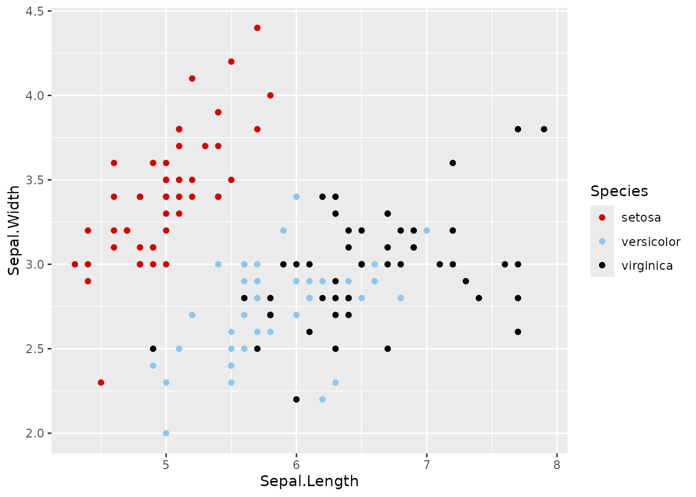
Both scales take the same options:
-
palette:"default"(the main colors) or"bars"(softer versions for bars, areas, and pies – more on this below) -
order: use the colors in a different order, e.g.order = c(7, 1, 2)starts with navy -
reverse: reverse the palette
ggplot(iris, aes(Sepal.Length, Sepal.Width, color = Species)) +
geom_point() +
scale_color_cleanplots(order = c(7, 1, 2))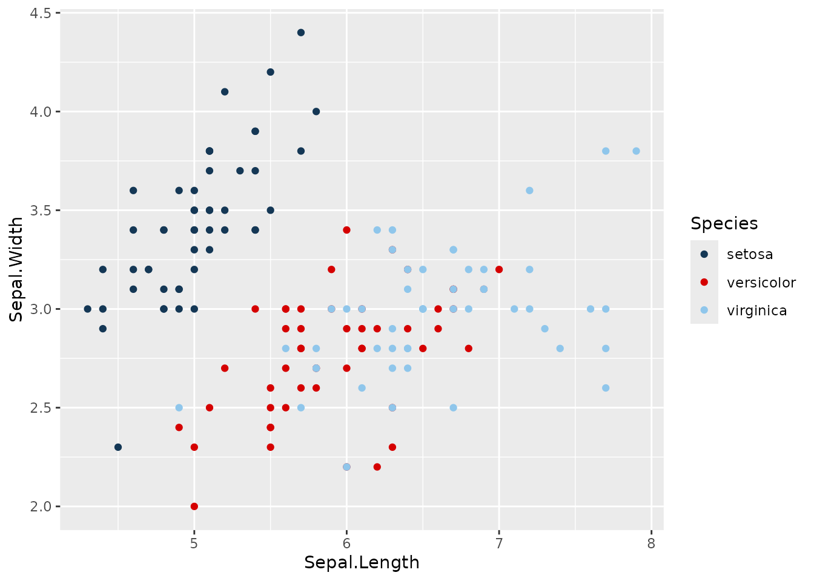
To use individual colors manually, cleanplots_colors()
returns hex codes by name:
cleanplots_colors()
#> red ltblue black gray purple pink navy ltgray
#> "#D50000" "#8FC6EB" "#000000" "#909090" "#740074" "#FFB3D9" "#143755" "#C0C0C0"
#> dkgray lavender
#> "#404040" "#D9D7F0"
cleanplots_colors("red", "navy")
#> red navy
#> "#D50000" "#143755"2. The two palettes
The main palette is used for markers, lines, and confidence intervals. It alternates darker and lighter colors so that the first several groups remain distinguishable even when printed in black & white, and it contains no red–green pair (red-green colorblindness is the most common form, affecting roughly 8% of men).
The bar palette contains softer versions of the same colors. Bars, areas, and pie slices use far more ink than points and lines, so full-strength colors overwhelm; cleanplots uses gentler fills for these elements:
ggplot(mpg, aes(drv, fill = factor(year))) +
geom_bar(position = "dodge") +
scale_fill_cleanplots(palette = "bars") +
labs(x = "Drive type", fill = "Year")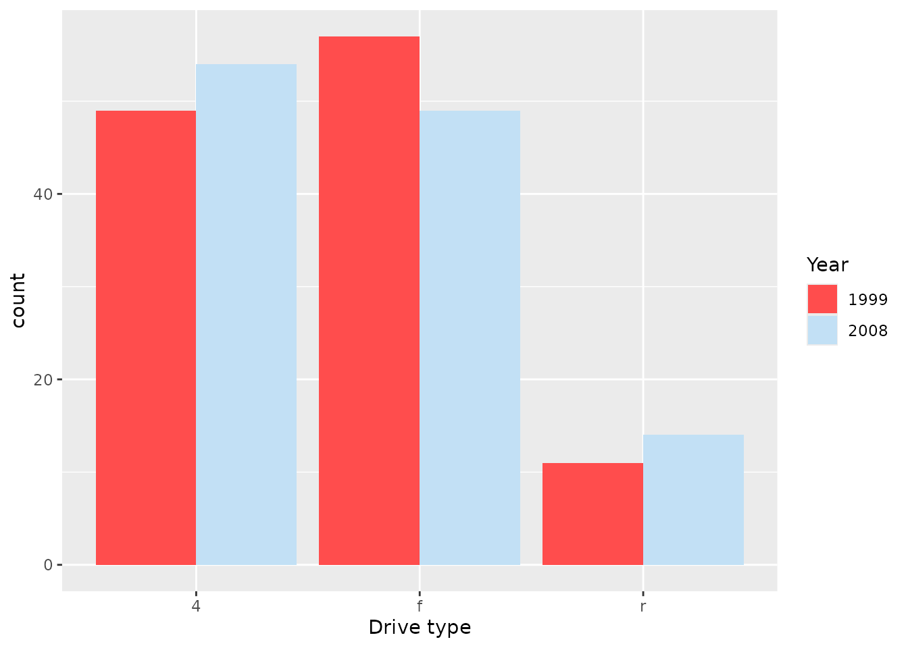
3. Shapes and line patterns
Color alone reliably distinguishes about 4–5 groups. Beyond that – and for black & white printing and colorblind readers – cleanplots varies multiple visual channels at once, so that no group pair ever depends on a single cue:
- Color and lightness: the palette alternates dark and light.
-
Marker shape and fill:
scale_shape_cleanplots()gives hollow shapes (circle, square, triangle, diamond) to the dark colors and solid shapes to the light colors. -
Line pattern:
scale_linetype_cleanplots()assigns solid, solid, dashed, dashed, shortdash, shortdash, longdash, longdash.
The assignments are coordinated: any two groups that share a shape or a line pattern always differ strongly in lightness, so every pair of groups is separated by at least two independent channels.
ggplot(mpg, aes(displ, hwy, color = class, shape = class)) +
geom_point(size = 2, stroke = 0.7) +
scale_color_cleanplots() +
scale_shape_cleanplots()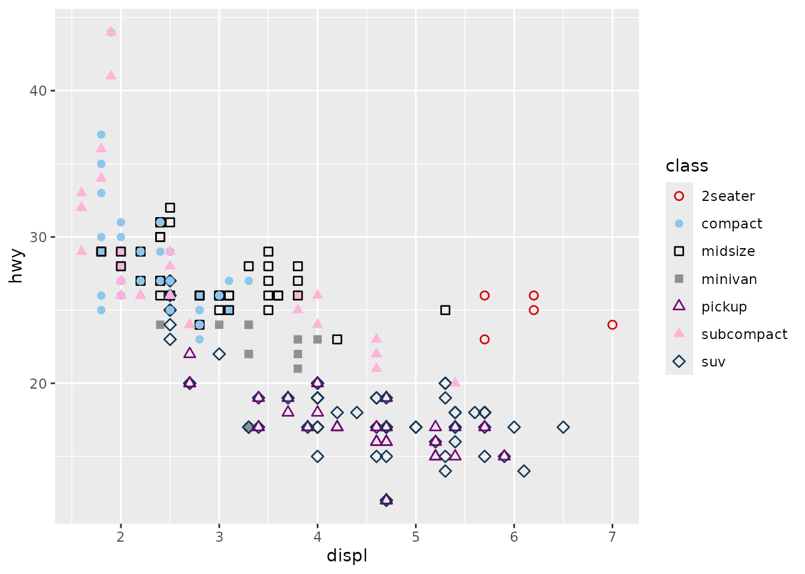
ggplot(economics_long, aes(date, value01, color = variable, linetype = variable)) +
geom_line(linewidth = 0.75) +
scale_color_cleanplots() +
scale_linetype_cleanplots()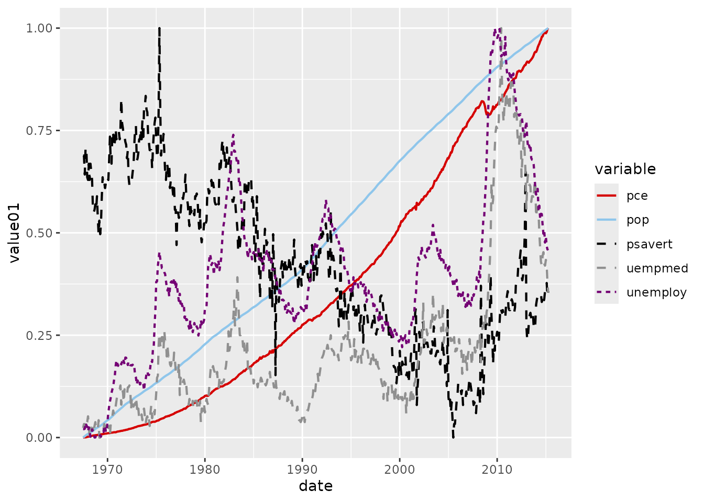
4. The theme
theme_cleanplots() applies the cleanplots layout: white
background, no plot border, light gray axis lines, dotted gridlines, a
frameless legend at the right, and black-outlined facet strips. Like any
ggplot2 theme, add it per plot:
ggplot(mpg, aes(displ, hwy, color = class, shape = class)) +
geom_point(size = 2, stroke = 0.7) +
scale_color_cleanplots() +
scale_shape_cleanplots() +
theme_cleanplots()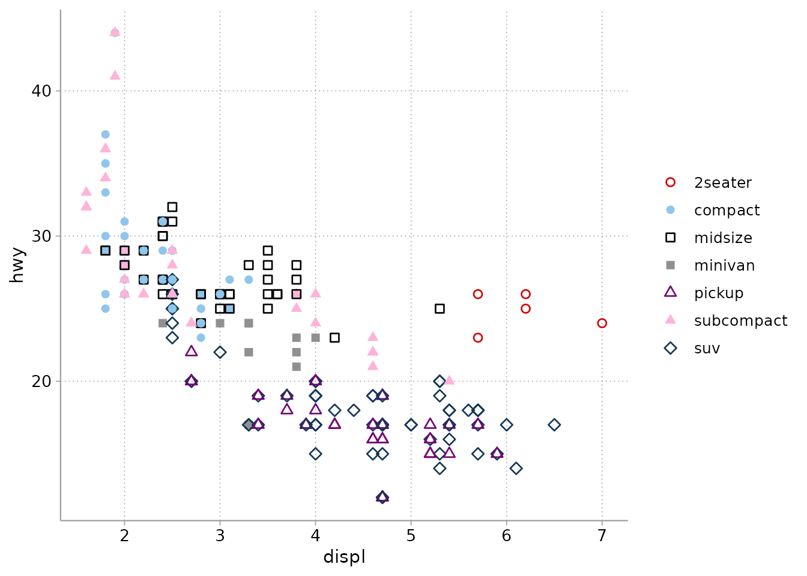
5. The full setup: cleanplots_defaults()
Adding scales and themes to every plot gets repetitive. One call at the top of your script applies the complete cleanplots setup for the session:
After this, with no scales or theme added:
- every plot uses
theme_cleanplots(); - discrete
coloraesthetics use the main palette, and discretefillaesthetics use the softer bar palette (bars and areas automatically get the gentler colors); - points are larger with heavier outlines (
size = 2,stroke = 0.7), so the hollow marker shapes are clearly visible; - lines are thicker (
linewidth = 0.75) forgeom_line(),geom_path(),geom_step(),geom_density(),geom_function(), andgeom_smooth(); error bars, linereanges, and pointranges use 80% of that; -
geom_smooth()fit lines are cleanplots red with a light gray confidence band, instead of ggplot2’s blue.
ggplot(mpg, aes(displ, hwy, color = class, shape = class)) +
geom_point() +
scale_shape_cleanplots()
ggplot(mpg, aes(displ, hwy)) +
geom_point(color = cleanplots_colors("gray")) +
geom_smooth(method = "loess", formula = y ~ x)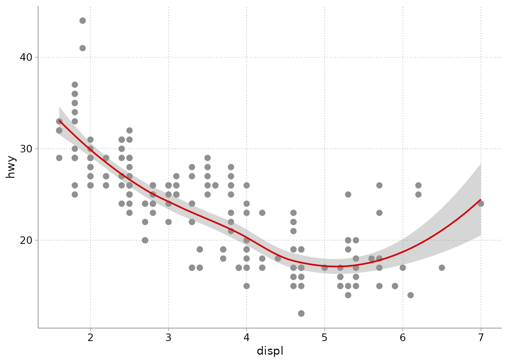
All settings are arguments if you prefer different sizes:
cleanplots_defaults(base_size = 12, point_size = 2,
point_stroke = 0.7, line_width = 0.75,
smooth_color = "#D50000")The default text size (12) is chosen to match the body text of an academic article when the figure is saved at the recommended size (see the next section): if you can read the article, you can read the graph. For contexts that need bigger text – lecture slides especially – increase it:
cleanplots_defaults(base_size = 16) # lecture slidesEverything remains overridable per plot: an explicit scale, theme, or aesthetic always wins. For example, to use the main palette for a fill instead of the automatic bar palette:
ggplot(mpg, aes(drv, fill = factor(year))) +
geom_bar(position = "dodge") +
scale_fill_cleanplots(palette = "default") +
labs(x = "Drive type", fill = "Year")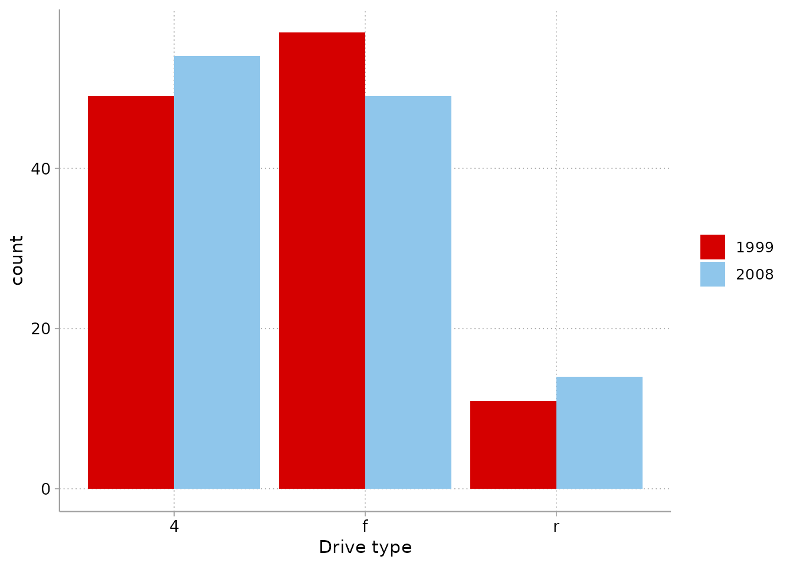
To restore ggplot2’s defaults:
cleanplots_defaults() sets session-wide state, which
persists until you restart R. To reset manually:
theme_set(theme_gray())
options(ggplot2.discrete.colour = NULL, ggplot2.discrete.fill = NULL)
update_geom_defaults("point", list(size = 1.5, stroke = 0.5))6. Saving figures
An important quirk of ggplot2: a plot has no intrinsic size. Text,
markers, and lines are physical units (points and millimeters), and
ggsave() without explicit dimensions saves at
whatever size your plot window happens to be – so the same code
produces figures with different proportions on different days, machines,
and window layouts.
The fix is to always save at explicit dimensions.
cleanplots_save() does this with tuned defaults – 7 x 5
inches at 300 dpi:
p <- ggplot(mpg, aes(displ, hwy, color = drv)) + geom_point()
cleanplots_save("my-figure.png", p)Why 7 x 5? It matches the default figure size of R Markdown (HTML)
documents, and a 7-inch figure placed at the 6.5-inch text width of a
US-letter manuscript scales the 12-point default text to about 11 points
– comparable to the article’s body text. The file extension sets the
format, so .pdf, .tiff, or .eps
for journal submission systems work directly. Override any default as
needed:
cleanplots_save("slide-figure.png", p, width = 10, height = 5.6)The same principle applies to other ways of saving:
-
ggsave()directly: always passwidth,height, anddpi. - RStudio’s Export button: type explicit dimensions in the dialog (e.g., 2100 x 1500 pixels = 7 x 5 inches at 300 dpi) rather than accepting the window size.
-
R Markdown / Quarto: figures are sized by chunk
options, which is already fixed-size by construction. To match
cleanplots_save():knitr::opts_chunk$set(fig.width = 7, fig.height = 5)(orfig-width/fig-heightin Quarto). Note thatpdf_documentdefaults to 6.5 x 4.5 – article text width – which also works well. -
Base devices (
png()…print(p)…dev.off()): pass dimensions to the device call.
Avoid copy-pasting figures from the plot window into Word or PowerPoint: the result is window-sized and screen-resolution.
7. Plots of predictions and marginal effects
cleanplots works out of the box with the marginaleffects and modelsummary packages. With
cleanplots_defaults() set, their plots pick up the colors
and theme automatically.
A coefficient plot with modelsummary::modelplot():
mod1 <- lm(hwy ~ displ + factor(cyl), data = mpg)
mod2 <- lm(hwy ~ displ + factor(cyl) + drv, data = mpg)
modelsummary::modelplot(list("Baseline" = mod1, "+ Drive type" = mod2),
coef_omit = "Intercept") +
geom_vline(xintercept = 0, linetype = "dashed", color = "gray50") +
labs(x = "Coefficient estimates and 95% confidence intervals")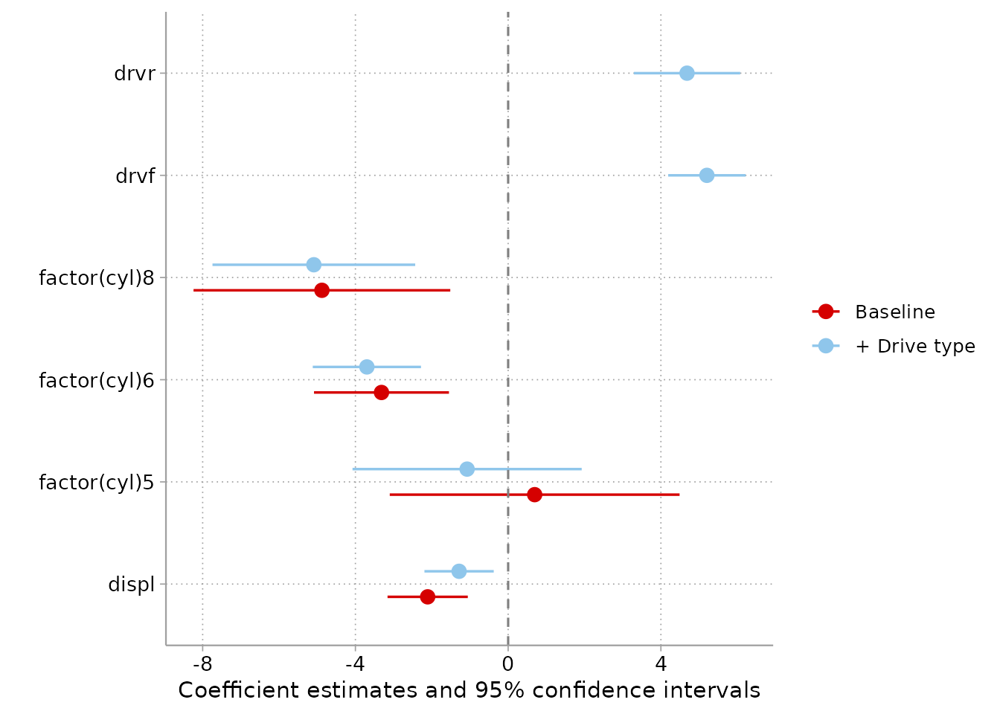
Adjusted predictions for a nominal predictor with
marginaleffects::plot_predictions():
mod <- lm(hwy ~ displ * drv + factor(cyl), data = mpg)
marginaleffects::plot_predictions(mod, condition = c("cyl", "drv"))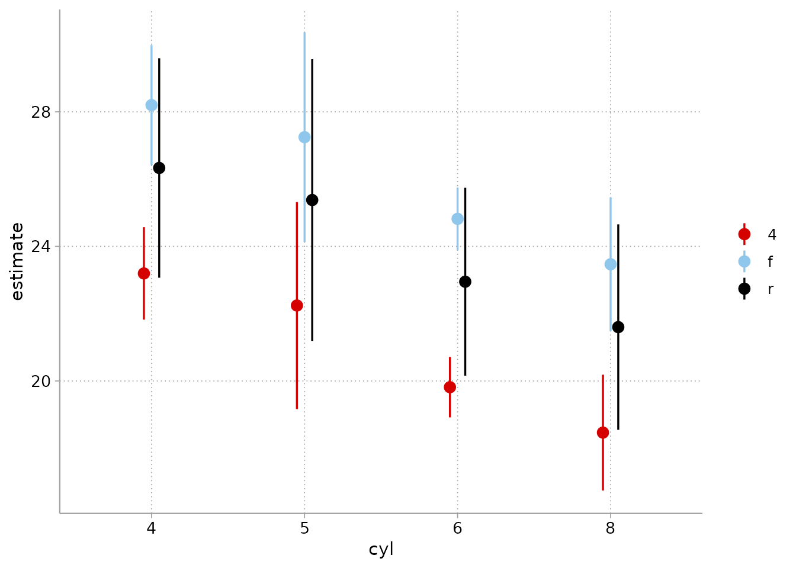
Predictions across a continuous predictor by group. One note here:
plot_predictions() draws its confidence-interval ribbons
with heavy transparency (alpha = 0.1), which is tuned for saturated
colors. Add scale_fill_cleanplots(palette = "default") so
the ribbons use the full-strength palette rather than the soft bar
colors:
marginaleffects::plot_predictions(mod, condition = c("displ", "drv")) +
scale_fill_cleanplots(palette = "default")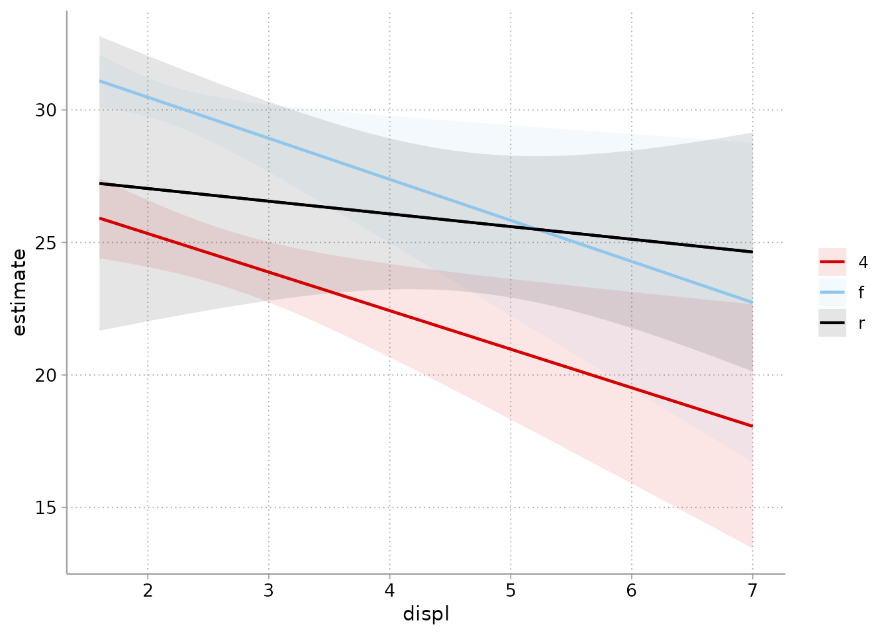
For full control of the ribbons (or anything else), use
plot_predictions(..., draw = FALSE) to get the plotting
data and build the figure yourself:
pr <- marginaleffects::plot_predictions(
mod, condition = c("displ", "drv"), draw = FALSE)
ggplot(pr, aes(displ, estimate, color = drv, fill = drv)) +
geom_ribbon(aes(ymin = conf.low, ymax = conf.high),
alpha = .35, color = NA) +
geom_line() +
labs(y = "Predicted highway MPG")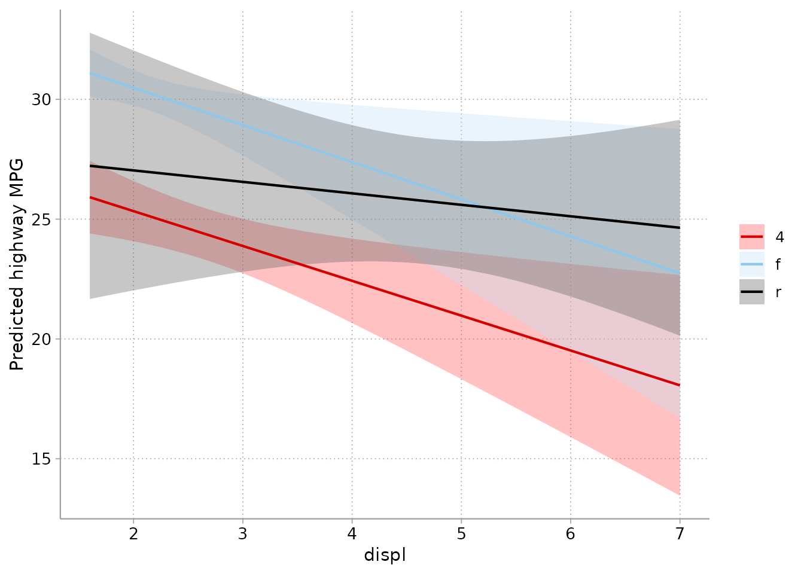
And comparisons (e.g., group differences) with
marginaleffects::plot_comparisons():
marginaleffects::plot_comparisons(mod, variables = "drv",
condition = "displ")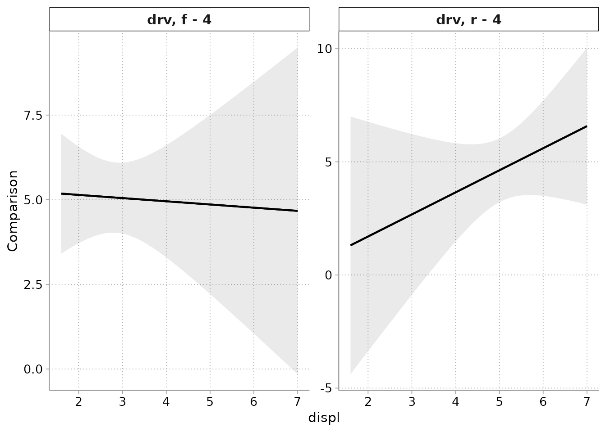
8. For Stata users
A companion cleanplots scheme for Stata shares this package’s colors, marker symbols, line patterns, and layout – the hex values in both languages are computed from the same definitions, so colors match exactly. The mapping:
| Stata | R |
|---|---|
set scheme cleanplots |
cleanplots_defaults() |
p1–p10 colors |
scale_color_cleanplots() |
p1bar–p10bar colors at
intensity bar 70
|
scale_fill_cleanplots(palette = "bars") |
marker symbols (symbol p1 …) |
scale_shape_cleanplots() |
line patterns (linepattern p1line …) |
scale_linetype_cleanplots() |
| scheme layout settings | theme_cleanplots() |
| graph export sizing | cleanplots_save() |
The Stata scheme is available at https://www.trentonmize.com/software/cleanplots.